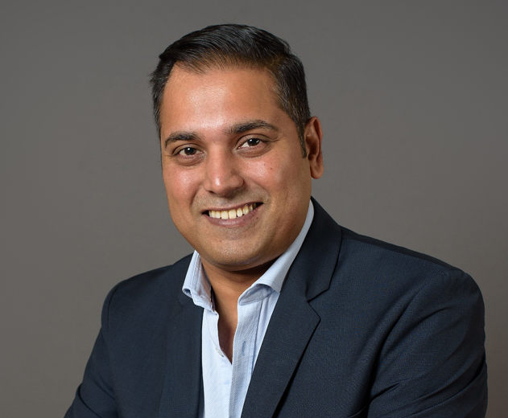

I'm a Technical Project Manager who thrives in complex engineering environments where security, governance, and delivery discipline matter. Over the past several years, I've led cloud, infrastructure, and platform initiatives across banking, healthcare, and high-tech, working closely with architects, platform engineers, and InfoSec teams to deliver secure, compliant, and predictable outcomes. I'm at my best when I'm breaking down technical scope, aligning cross-functional teams, managing risks early, and keeping execution structured and transparent. I care about doing things properly — strong governance, clear documentation, and audit-ready delivery — while keeping teams moving and focused on what matters.
Led a large‑scale Azure and AWS cloud migration and infrastructure builds across DEV, ETE, QA, and Production environments. Coordinated Microsoft, AWS, and internal engineering teams through phased milestones, dependency tracking, and structured execution plans. Ensured all cloud environments met security controls, IAM requirements, network access policies, and compliance standards in partnership with Information Security. Managed cloud networking configurations including ACLs, environment isolation, and segmentation of workloads. Maintained audit‑ready governance documentation (decision logs, risk registers, change records, technical signoffs). Delivered the program on time and within budget, reducing on‑premises data center operating costs.
Managed the optimization of 300+ server environments across DEV, ETE, QA, and Production. Coordinated BCX, Dimension Data, and internal infrastructure teams through a structured, phased execution plan. Ensured all configuration changes underwent security impact assessments, compliance reviews, and formal change management approval. Tracked cross‑team dependencies, surfaced risks early, and maintained delivery momentum through clear milestone tracking and stakeholder communication. Improved operational efficiency while maintaining full alignment with security, governance, and audit requirements.
Coordinated the secure migration of 400TB+ of on‑premises data to Azure. Managed end‑to‑end execution across Microsoft, BCX, Dimension Data, and internal engineering teams. Partnered with Information Security and compliance teams to ensure data handling, encryption, transfer protocols, and storage configurations met cloud security and governance standards. Delivered a ZAR 3m cost saving by identifying and executing an Azure Databox‑based solution. Maintained clear progress tracking, risk visibility, and audit‑ready documentation throughout the program.
Enabled the launch of a large‑scale Agile Release Train by structuring and onboarding cross‑functional teams, establishing governance practices, and ensuring clear roles, delivery processes, and alignment mechanisms. Partnered with RTEs, Product Management, and domain leaders to clarify scope and execution strategy.
Designed and built a local AI experimentation environment to evaluate and benchmark multiple LLMs for agentic workflows. Set up LM Studio to run Claude‑compatible models and integrated OpenClaw for tool‑calling and autonomous agent testing. Connected a dedicated NVIDIA 5060 Ti AI compute box to my laptop to enable high‑performance local inference. Currently running iterative experiments to determine which model families (Claude‑compatible, Qwen, Mistral, DeepSeek, etc.) provide the most stable and accurate performance for OpenClaw and Claude‑style reasoning. Work includes model quantization testing, latency benchmarking, prompt stability analysis, and agent reliability evaluation.
I've worked closely with Information Security teams across multiple programs to ensure every delivery met the required security, governance, and compliance standards. I take responsibility for validating IAM, encryption, network security, and data handling controls before any environment or workload is promoted. I maintain full traceability through decision logs, risk registers, and change records, and I make sure all documentation is audited throughout the lifecycle — not just at the end. I'm comfortable managing security‑related risks, coordinating with security analysts and architects, and ensuring that technical teams understand the compliance expectations behind their work. Whether it's secure data migration, cloud environment builds, or infrastructure changes, I make sure the right controls, approvals, and governance steps are followed. My approach aligns well with certification‑style evaluation workflows where structure, documentation, and traceability are essential.